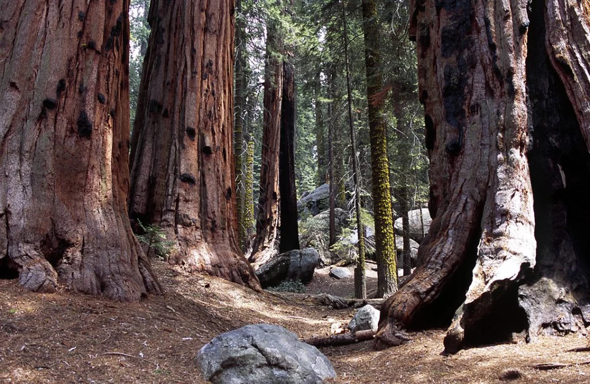
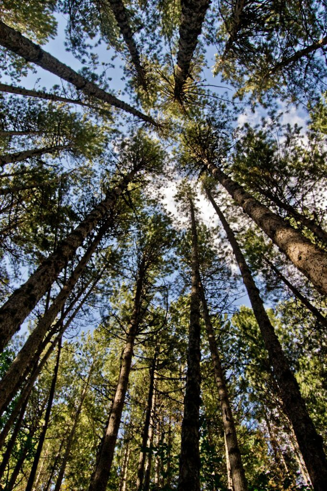

Deep in the heart of Calabria lies a hidden sanctuary that has remained largely unchanged since the 17th century. The Giganti della Sila are not creatures of myth, but ancient Laricio Pines—colossal trees that have stood as silent witnesses to the rise and fall of empires.

Reaching heights of over 45 meters and boasting trunks up to 2 meters wide, these trees are among the oldest and tallest in Europe. Planted by the noble Mollo family in the 1600s, this forest has evolved into a biogenetic reserve of global importance.

Walking among the Giants is more than a hike; it is a sensory experience. The air here is documented to be among the purest in the world. The massive canopy creates a unique microclimate—cool even in the height of the Mediterranean summer—while the dense needles of the pines dampen the sounds of the outside world, creating a natural "soundscape of serenity."
Documented to be among the purest air in the world.
Cool sanctuary even in the peak of Mediterranean summer.
A natural soundscape of serenity protected by dense pine needles.
Our S6000U sensors monitor temperature, humidity, and pressure to understand how the Giants are breathing in real-time.
We measure the "Soundscape" to ensure the silence of the reserve is never compromised by external noise pollution.
By combining GPS localization with AI storytelling, the trees "speak" to you, sharing the history of the Twin Giants.